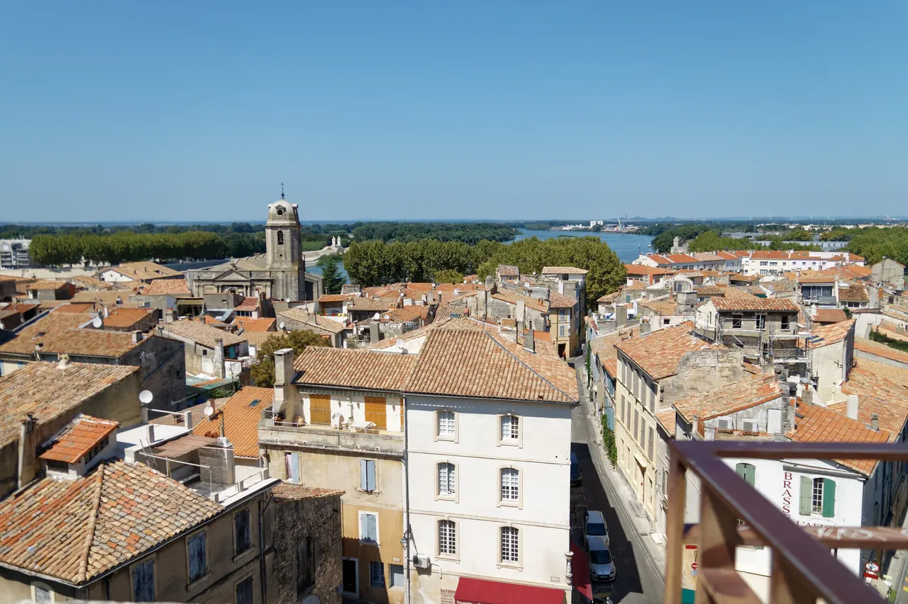

{kind=link}

Palais des Papes
14세기 가톨릭 교황청이 로마를 떠나 68년간 머물렀던 서유럽 최대의 중세 고딕 요새 궁전. 베네딕토 12세의 구궁전과 클레멘스 6세의 신궁전, 마테오 조바네티의 프레스코화와 히스토패드 3D 증강현실 복원.

| 항목 | 평가 |
|---|---|
| 여행 적합도 | ★★★★★ Jason·Julia의 생활형 여행에 최적화 |
| 예산 체감 | 중 |
| 일정 강도 | 근교일 2회로 높음 |
| 예약 핵심 | 숙소주차·Palais·TGV 연결 |
| 우천 전환 | Palais·Arles 실내·회랑 중심, Pont 축소 |
여행의 역할: 뤼베롱의 농가와 언덕마을을 떠나 론강 서부 프로방스로 이동하는 구간이다. 아비뇽에서는 교황궁과 성벽도시를 이해하고, 근교에서는 위제스와 퐁뒤가르, 아를의 로마유적·중세·반 고흐·생활도시를 경험한다. Les Baux·Saint-Rémy·Glanum은 Arles를 완전히 교체하는 선택 대안으로 보존한다.
여행자 기준: Jason·Julia는 새로운 도시와 지역을 방문하는 경험을 미술관·박물관보다 선호한다. 따라서 Palais des Papes는 도시 정체성을 이해하는 핵심 기념물로 유지하되, Petit Palais·Collection Lambert·Calvet 등은 비·피로·특별행사에 따른 선택 모듈로 둔다. Julia의 수영은 선택 일정이며 숙소 선정조건이 아니다.
| 장소·경험 | 판단 | 이유 |
|---|---|---|
| Collection Lambert | 대체 | 현대미술 관심이 강할 때만 |
| LUMA·Alyscamps·고대박물관 | 선택 | Arles 핵심 동선에 모두 더하면 과밀하므로 한 곳만 |
| Nîmes 추가 | 비추천 | Pont du Gard와 함께 넣으면 도시수집형 일정이 됨 |
| 장소 | 등급 | Jason·Julia에게 추천하는 이유 |
|---|---|---|
| Palais des Papes | 필수 | 아비뇽의 도시정체성과 권력구조를 이해하는 핵심 |
| Les Halles | 필수 | 관광도시 안의 실제 식문화와 장보기 |
| Rocher des Doms | 우선 추천 | Rhône·Pont·Villeneuve를 한 번에 조망 |
| Pont Saint-Bénézet | 우선 추천 | 도시·강·교역의 관계를 상징 |
| Rue des Teinturiers | 우선 추천 | 축제도시 이전의 수공업·생활골목 |
| Uzès 구시가지·Place aux Herbes | 우선 추천 | 금요일에도 실행 가능한 지역도시와 생활광장 경험 |
| Pont du Gard | 필수에 가까운 우선 추천 | 로마공학과 자연경관의 결합 |
| Arles·Arènes·Théâtre antique | 필수 | 로마유적과 생활도시가 분리되지 않는 핵심 당일치기 |
| Saint-Trophime 또는 Fondation Vincent van Gogh | 우선 추천 | 중세와 반 고흐 중 관심사에 따라 하나를 깊게 선택 |
| Les Baux·Saint-Rémy·Glanum | 대체 | Arles를 완전히 교체하는 Alpilles 선택안 |
| Carrières des Lumières | 대체 | Alpilles 선택안에서 악천후·몰입형 전시 선호 시 |
| Petit Palais | 대체 | 비·폭염 시 중세회화 60분 |
| 항목 | 확정·권장 내용 |
|---|---|
| 체류 | 2026년 9월 16일 수요일 체크인 → 9월 20일 일요일 체크아웃, 4박 |
| 기본 일정 | 9/16 Luberon→Avignon 정착 / 9/17 Uzès+Pont du Gard+Nîmes+차량반납 / 9/18 Arles TER / 9/19 Avignon 핵심(도보) / 9/20 Lyon TGV |
| 여행 주제 | 교황도시·성벽·론강 / 로마 수도교·로마 도시 유산(Nîmes) / Arles의 로마·중세·반 고흐·생활도시 |
| 최우선 숙소권 | Porte Saint-Michel–Gare Centre–Corps Saints 1순위. Carmes–Université 동쪽 성벽권 2순위 |
| 숙박 형태 | 주방·세탁이 있는 아파트호텔 또는 주차가 확정되는 호텔. 성벽 깊숙한 곳보다 차량진입·야간귀가·TGV 이동 편의 우선 |
| 계획 숙박예산 | 계획가(2026-08 조사) — 2인 4박 €520–900 실속·중간급 목표. 넓은 4성급 객실·프리미엄 아파트는 €900–1,250 범위 가능. 실시간 총액은 예약 시 재확인 |
| 필수 | Les Halles·Palais des Papes·Place du Palais·Rocher des Doms·Pont Saint-Bénézet·Uzès 구시가지·Pont du Gard·Arènes de Nîmes·Maison Carrée·Arles |
| 선택 | Villeneuve-lès-Avignon / Fondation Vincent van Gogh / Les Baux·Saint-Rémy·Glanum 대체일 |
| 음식 | Halles 장보기·간단 점심, 저녁은 Avignon intra-muros 레스토랑. 당일치기 날 점심은 시장·피크닉·마을 비스트로 |
| 운동 | Jason: 성벽 남쪽·Rhône·Île de la Barthelasse 러닝 1회. Julia: 시립수영장 선택, 숙소 조건과 분리 |
| 행사 | 9/19–20 Journées européennes du patrimoine. Avignon/Arles 세부 프로그램 출발 전 재확인 |
| 피로도 | 도시일 3, Uzès·Pont·Nîmes 4, Arles 4, 이동일 3 |
| 주요 위험 | 성벽 내부 차량진입·주차, 주말 JEP 혼잡, 당일치기 차량 내 짐, 강한 미스트랄, 유적지 노출·계단, TGV역 반납 지연 |
9/16 Luberon 체크아웃 → Avignon 체크인·생활권 적응
↓
9/17 Uzès 구시가지 → Pont du Gard → Nîmes (Arènes·Maison Carrée) → Avignon TGV Hertz 반납
↓
9/18 Arles (TER): Arènes → Théâtre antique → Forum → Saint-Trophime → La Roquette
↓
9/19 Avignon (도보): Les Halles → Palais des Papes → Rocher des Doms → Pont Saint-Bénézet
↓
9/20 Avignon TGV → Lyon Part-Dieu
| 날짜 | 테마 | 핵심 방문지 | 피로도 |
|---|---|---|---|
| 9/16 수 | 뤼베롱에서 교황도시로 | 체크아웃·체크인·성벽 안 가벼운 산책 | 3/5 |
| 9/17 목 | 가르 지방·님 로마유적과 렌터카 최종 반납 | Uzès 구시가지·Pont du Gard·Nîmes(Arènes·Maison Carrée)·Avignon TGV 반납 | 4/5 |
| 9/18 금 | Arles 철도 당일치기 | Arènes·Théâtre·Forum·Saint-Trophime·La Roquette (TER 왕복) | 4/5 |
| 9/19 토 | 아비뇽 핵심도시일 (도보) | Les Halles·Palais·Rocher·Pont·구시가지 | 3/5 |
| 9/20 일 | 리옹 이동 | Avignon TGV·Lyon Part-Dieu (TGV 직행) | 3/5 |
| Day | 날짜 | 점심 | 저녁 |
|---|---|---|---|
| 19 | 9/16 수 | 이동 중 간단식 | 아비뇽 첫 저녁 |
| 20 | 9/17 목 | Pont du Gard 간단한 점심 | 아비뇽 복귀 후 저녁 |
| 21 | 9/18 금 | Arles 구시가지 비스트로 | 아비뇽 |
| 22 | 9/19 토 | Les Halles | 프로방스 마지막 저녁 |
| 23 | 9/20 일 | 이동 중 또는 TGV | 리옹 도착 후 |
Day 20·21 점심은 미리 정하라. 종일 밖에 있으며 당일치기 이동이 있다.
14세기 가톨릭 교황청이 로마를 떠나 68년간 머물렀던 서유럽 최대의 중세 고딕 요새 궁전. 베네딕토 12세의 구궁전과 클레멘스 6세의 신궁전, 마테오 조바네티의 프레스코화와 히스토패드 3D 증강현실 복원.

12세기 론(Rhône) 강을 건너 교황령 아비뇽과 프랑스 왕국을 잇던 920m의 유일한 석조 다리. 소빙하기의 거센 홍수로 22개 아치 중 4개와 2층 생니콜라 예배당만 남은 유네스코 세계유산.

우제스의 외르 샘에서 고대 로마 식민도시 님(Nîmes)까지 50km를 오직 중력만으로 흐르게 한 기원 1세기 3층 로마 수도교. 높이 48.8m 세계 최고(最高)의 고대 수력 토목공학 걸작(유네스코 세계유산).

아비뇽 교황궁 북쪽에 솟아오른 해발 58m 백색 석회암 바위산 정상 공원. 론(Rhône) 강의 장대한 물줄기, 생베네제 다리, 생앙드레 요새, 몽방투를 360도로 내려다보는 아비뇽 최고의 파노라마 전망대.

프랑스 제1공작의 1,000년 공작성(Le Duché), 12세기 로마네스크 원형 피네스트렐 탑(Tour Fenestrelle), 석조 아케이드와 분수가 어우러진 에르브 광장(Place aux Herbes)의 우아한 예술과 역사의 도시.

기원전 1세기 로마 제국의 거대한 원형 경기장과 고대 극장, 12세기 로마네스크 생트로핌 회랑, 1888년 빈센트 반 고흐가 300여 점의 불꽃같은 걸작을 쏟아낸 빛과 역사의 도시.

서기 90년 로마 제국이 축조한 2만 명 수용 규모의 2단 120개 아치 원형 경기장. 중세 200여 채 가옥이 들어선 요새 마을로 변신했던 굴곡진 역사와 현재도 카마르그 투우가 열리는 2,000년 현역 무대(유네스코 세계유산).

기원전 12년 아우구스투스 황제 치세에 지어진 1만 명 수용 규모의 고대 로마 극장. 사라진 거대한 무대 배경벽에서 홀로 살아남은 두 개의 대리석 기둥 '두 과부(Les Deux Veuves)'와 루브르 박물관 '아를의 비너스'의 원 출토지.
서기 70년경 로마 제국 플라비우스 왕조 시기 축조된 24,000명 수용 규모의 타원형 원형경기장. 2단 60개 아치 외벽과 내부 회랑, 관람석 구조가 로마 제국 영토 전체를 통틀어 가장 온전하게 보존된 2,000년 현역 투기장(프랑스 국립 역사기념물).
기원전 1세기 아우구스투스 황제의 양손자 가이우스와 루키우스 카이사르에게 헌정된 전 세계에서 가장 완벽하게 보존된 로마 제국 신전. 30개의 코린트식 기둥과 정교한 아칸서스 잎 부조가 빛나는 백색 석조 건축 걸작(2023년 유네스코 세계유산).

높이 15m 거대한 지하 백색 석회암 채석장 동굴 전체를 디지털 캔버스로 변모시킨 세계 최초·최대 규모의 몰입형 미디어 아트 공간. 7,000㎡ 암벽과 바닥을 감싸는 빛과 음악의 향연.

기원전 6세기 켈트 성소에서 헬레니즘 도시를 거쳐 로마 제국의 온천 휴양도시로 번영했던 거대한 고대 발굴 유적지. 갈리아에서 가장 완벽하게 보존된 기원전 1세기 로마 영묘와 개선문 '레 장티크(Les Antiques)'.

알피유(Alpilles) 산맥 해발 245m 석회암 절벽 위에 우뚝 솟은 중세 독수리 요새 마을. 자연 암반과 성벽이 하나로 결합된 레보 성채(Château des Baux) 폐허와 올리브 계곡 대파노라마.

1889년 빈센트 반 고흐가 자진 입원하여 『별이 빛나는 밤』, 『붓꽃』 등 143점의 불후의 명작을 탄생시킨 11세기 로마네스크 수도원 요양원. 고흐의 복원된 병실과 평화로운 중세 수도원 회랑.

16세기 예언가 노스트라다무스의 탄생지이자 반 고흐가 『별이 빛나는 밤』을 탄생시킨 알피유 북쪽 기슭의 세련된 문화 예술 소도시. 플라타너스 가로수 순환로와 우아한 18세기 분수 광장.

고대 로마 정치·경제의 중심지였던 포룸 터 위에 조성된 아를 구도심의 대표 광장. 빈센트 반 고흐의 명작 『밤의 카페 테라스』 무대(Café Van Gogh), 로마 신전 기둥이 박힌 오텔 노르-피뉘, 프레데리크 미스트랄 동상.

12세기 프로방스 로마네스크 석조 조각의 정점인 생트로핌 파사드와, 12세기 로마네스크 및 14세기 고딕 양식이 한 중정에서 극적으로 공존하는 사각형 수도원 회랑(유네스코 세계유산).

15세기 귀족 저택을 개조해 2014년 개관한 현대 미술 재단. 반 고흐의 혁신적인 예술 세계와 동시대 현대 미술 작가들의 대화, 옥상 테라스의 유리 설치 작품과 수준 높은 아트 북숍.

론(Rhône) 강변을 따라 파스텔톤 가옥과 덧창, 조약돌 골목이 이어지는 아를의 옛 어부와 뱃사공 주거 지구. 관광지 인파를 벗어난 조용한 로컬 생활권과 폴 두메르 광장의 아늑한 카페 테라스.

탕튀리에 운하 골목에 자리한 아늑하고 로맨틱한 프로방스 모던 비스트로. 친절한 호스피탈리티와 제철 코스 요리.

아를 로케트 역사 지구의 활기찬 골목 비스트로. 카마르그 황소 스튜(Gardianne de taureau)와 내추럴 와인.

16세기 유서 깊은 수도원 회랑 안뜰 정원에서 즐기는 프랑스 무쇠 주물 냄비(Cocotte) 전통 가정식 비스트로.

세계적인 식물학자 파트리크 블랑의 300㎡ 거대한 수직 정원(Mur Végétal) 외벽 아래 40여 개 프로방스 전통 식재료 좌판이 모인 아비뇽의 활기찬 실내 중앙 미식 시장.
뤼베롱은 농가 주방이 있었다. 아비뇽은 도시 숙소다. 시장에서 사도 조리 여건이 다르다.
당일치기 점심전략이 이 구간의 실질 과제다. Day 21·22는 종일 밖에 있다.
| 이름 | 정체 | 비고 |
|---|---|---|
| Papeton d'Aubergine | 가지 요리. 이름이 '교황'에서 왔다 | 아비뇽 향토음식 (교차 확인 권장) |
| Daube avignonnaise | 프로방스 도브의 아비뇽식. 양고기를 쓰는 판본이 있다 | (확인 권장) |
| Tapenade · Anchoïade | 올리브·안초비 페이스트 | 전채 |
| Brandade de Nîmes | 소금대구를 올리브유·우유로 으깬 것 | 님 특산. 우제스 인근 |
| Fougasse | 프로방스 납작빵 | 시장·빵집 |
| Calisson | 엑상 특산 | 여기서도 팔지만 원산지는 엑상 |
| Melon · figue · raisin | 9월 제철 | 시장 |
| Olives de Nyons · huile d'olive | 레보 인근이 올리브유 산지 | |
| Gardianne de taureau | 카마르그 황소고기를 레드와인·허브에 오래 조린 스튜. 카마르그 쌀을 곁들인다 | Day 22 아를의 우선 메뉴 |
| Tellines | 카마르그산 작은 조개 | 아를. 제철·취급 여부는 현장 확인 |
아비뇽 주변은 론 남부다. 샤토뇌프뒤파프가 차로 20분 거리다 (정확한 거리 확인).
| 유형 | 특징 |
|---|---|
| Châteauneuf-du-Pape | 교황이 심게 한 포도밭에서 유래한 이름 |
| Côtes du Rhône | 폭이 넓고 접근하기 쉽다 |
| Tavel | 로제 전용 AOC. 프로방스 로제와 성격이 다르다 |
| Lirac | Tavel 인근 |
샤토뇌프뒤파프에 간다면 — Vinadéa 한 곳으로 충분하다 마을 안(8 rue du Maréchal Foch)의 아펠라시옹 공식 와인하우스(Maison des Vins)다. 약 100개 도멘·250종 이상을 모아 두고 시음을 운영한다 — 2026-08-15 복수 출처 확인(아펠라시옹 공식·보클뤼즈 관광·자체 사이트). 시음 조건·운영시간은 방문 전 확인한다 (재확인) · 04 90 83 70 69. 자문 자료(2026-08-15)의 판단: 와이너리 여러 곳을 순회하지 말고 한 번만 제대로 — 마을과 옛 성터에서 론 계곡 풍경을 본 뒤 이곳에서 시음하는 조합이 좋다. 단 샤토뇌프뒤파프 방문 자체가 기본 일정 밖의 선택이고, 운전자는 시음하지 않는다.
운전이 있는 날은 마시지 않는다 Day 20은 도보 도시일이라 저녁에 마셔도 된다. Day 21은 운전하고 Day 22는 철도 당일치기가 기본이다. Day 22 저녁이 프로방스 마지막 밤이다. 이 날 저녁을 와인의 날로 잡는 것이 합리적이다.
사서 옮길 것인가 이후 리옹 4박, 파리 15박이 남았고 Day 23은 TGV 이동일이다. 병을 들고 기차를 타는 것은 가능하지만 무겁다. 파리에서 사는 편이 낫다.
가격은 계획가(2026-08 조사) — 메뉴·구성과 요금은 현장에서 달라질 수 있다. 확정가는 방문 당일 확인한다.
| 식당 | 성격 | 추천 주문·이용법 | 계획가격/인 | 예약 |
|---|---|---|---|---|
| Fou de Fafa | 작은 창작 비스트로 · 휴무 매주 월요일·화요일 정기휴무 (수~일요일 저녁 정상 영업) | 계절메뉴에서 생선·오리·채소요리 2–3개 공유 | €35–55 | 강권 |
| Le Goût du Jour | 정제된 지역재료 코스 · 휴무 화·수요일 휴무 (목~월 영업, 점심 12:00~13:30 / 저녁 19:00~21:30) | Inspiration 또는 dégustation, 특별저녁 1회 | €55–95 | 강권 |
| Restaurant SEVIN | Palais 인근 고급식 | 2026 계절메뉴, 토마토·남프랑스 재료 중심 | €90–160+ | 필수 |
| Les Cocottes Saint-Louis | 수도원정원 캐주얼 프렌치 | 2026 메뉴 €33–38, rouget·ravioles·채소 | €35–55 | 권장 |
| La Fourchette | 전통 남부 비스트로 | 남부풍 생선·고기·지역전통, 영업일 제한 큼 | €35–60 | 필수·휴무확인 |
| Les Halles 조리식품 | 피로한 날 포장 | roast chicken·ratatouille·샐러드·치즈 | €12–25 | 불필요 |
AI 자문 자료(2026-08-15)에서 추린 후보다. 가격은 미검증 참고치 (재확인). 미슐랭 표기는 2026-08-15 guide.michelin.com 에서 직접 확인한 것만 적었다.
| 식당 | 성격 | 참고 | 참고가격 | 연락처 |
|---|---|---|---|---|
| Le 46 (Bar à Vin) | 교황궁 인근 와인 비스트로 | charcuterie·오리·양고기에 Châteauneuf-du-Pape·Gigondas·Vacqueyras 잔 비교 | €30–50 | 04 90 85 24 83 |
| L'Épicerie | Place Saint-Pierre 캐주얼 | 고급식이 부담스러운 날 | €30–40 | 04 90 82 74 22 |
| Pollen | 파인다이닝 | 미슐랭 별 1, 2026 (확인). 계절 재료 서프라이즈 메뉴 | 고가 | 04 86 34 93 74 |
자문 자료의 판단: 프로방스 전체에서 특별식을 딱 한 번 넣는다면 — 도시적 창작요리는 Pollen, 지역 생산물 중심 프로방스는 생레미 La Table de Tourrel(15.2b) 중 하나만 고른다. 둘 다 갈 필요는 없다. 아비뇽 4박 중 하루 저녁을 비우기 쉬워 자문 자료는 Pollen 쪽을 우선 검토했다. Day 22 저녁(프로방스 마지막 밤·와인의 날)과 맞는지 예약 가능일로 판단한다.
| 지역 | 기본 | 특별식 선택 | 피할 것 |
|---|---|---|---|
| Uzès | Place aux Herbes 빵집·치즈가게(시장은 수·토만 — 9/18 금요일엔 없다) | Place aux Herbes 비스트로 | 아케이드 광장의 느린 점심 |
| Pont du Gard | Uzès에서 산 피크닉 | 사이트 카페 | 차량에 냉장식품 오래 방치 |
| Arles | Place du Forum 주변 비스트로·샌드위치 | 구시가지 계절식당 | 유적 사이 긴 코스요리 |
| Les Baux | 이른 샐러드·타르틴 | 전망 레스토랑은 예약·가격 확인 | 관광객 몰리는 12:30 무예약 |
| Saint-Rémy | 구시가지 비스트로·제과점 | 지역 생선·채소·양고기 | Glanum까지 무리한 코스식사 |
AI 자문 자료(2026-08-15)에서 추린 후보다. 가격은 미검증 참고치 (재확인). 미슐랭 표기는 2026-08-15 guide.michelin.com 에서 직접 확인한 것만 적었다.
| 지역 | 식당 | 성격 | 참고 | 참고가격 | 연락처 |
|---|---|---|---|---|---|
| Arles | Le Criquet | 구시가지 지중해식 | 당일치기에 맞는 1시간–1시간 30분 점심. gardianne de taureau 를 여기서 찾는다 | 중간 | 04 90 96 80 51 |
| Arles | La Chassagnette | farm-to-table 파인다이닝 | 미슐랭 별 1, 2026 (확인). 단 시내에서 떨어져 있다 — 유적·Van Gogh·LUMA 하루 일정이면 식사 때문에 이동하지 않는 편이 낫다 | 고가 | 04 90 97 26 96 |
| Saint-Rémy | L'Aile ou la Cuisse | 프렌치 | Alpilles 대안일 점심 후보 | €40–80 | 04 90 26 08 01 |
| Saint-Rémy | La Table de Tourrel | 지역 생산물 중심 파인다이닝 | 미슐랭 별 1 (확인). 5 rue Carnot. Pollen 과 둘 중 하나만(15.1b) | 고가 | — (연락처 확인) |
Saint-Rémy·Les Baux 는 기본 일정이 아니라 Day 21 대안 축이다 — 대안을 실행할 때만 위 후보가 산다.
| 장소 | 운영·일정 | 역할 |
|---|---|---|
| Les Halles d’Avignon | 화–일 06:00–14:00 (주말 14:30까지) · 휴무 월요일 휴장 · 입장 무료 — 공설 실내시장 자유 입장 · 예약 예약 불필요 — 공설 실내시장 | 아침장보기·점심·숙소식 |
| Uzès Place aux Herbes | 9/18 금요일은 시장일이 아님 | 구시가지·상점·빵집 중심으로 실행 |
| Uzès 토요시장 | 이번 체류와 불일치 | 9/19 Arles를 대체하지 않음 |
| L’Isle 목요시장 | 이번 이동일과 불일치 | 선택 자료로만 보존 |
| Saint-Rémy 수요시장 | 이번 체류와 불일치 | Alpilles 대안에도 억지로 넣지 않음 |
코스 A — 성벽 남쪽·Rhône
Porte Saint-Michel
→ Boulevard Saint-Roch
→ Porte de l’Oulle
→ Rhône 강변
→ 회차
코스 B — Barthelasse 전망형 - 바람·나룻배·교량동선 확인 후 선택 - 일몰 후 단독러닝보다 아침 권장
4박 거점은 성벽 안 도보권과 Avignon Centre역 접근성을 우선한다. 렌터카는 숙소 또는 관리주차장에 두고 Day 21 근교 일정에 사용한다.
이 정리가 핵심이다.
68년간 교황청이 여기 있었고, 그동안 인구가 5,000명에서 3만 명으로 늘었다. 성벽 4.5km와 유럽 최대 고딕 궁전은 관광용으로 지은 것이 아니라 행정과 방어의 인프라였다.
앞 구간의 마을들 — 뤼르마랭, 고르드, 메네르브 — 과 성격이 정반대다. 저쪽이 농업과 방어의 마을이라면 여기는 수도(首都)의 잔해다.
다리가 있어 도시가 컸고, 다리가 끊기며 도시의 역할이 줄었다.
건설 당시 리옹과 지중해를 잇는 유일한 연결로였다. 그리고 그 리옹으로 Day 23에 간다. 이 여행이 800년 전 그 축을 그대로 따라간다.
성벽 안에 사람이 산다. 학교와 약국과 빨래방이 있다. Les Halles를 먼저 보라는 배치가 그래서 옳다.
우제스는 살아 있는 시장도시이고, 퐁 뒤 가르는 50km 로마 수도교의 경이로운 토목공학, 님은 그 물을 공급받아 꽃피운 로마 제국의 핵심 식민도시다.
9월 17일의 순서 — Uzès 구시가지(오전) → Pont du Gard 수로교(정오) → Nîmes 원형경기장·메종카레(오후) → TGV역 렌터카 반납(저녁) — 가 이 유기적 연결을 완성한다. 15:45 Nîmes 출발 Hard Stop을 엄수하여 18:30 이전 렌터카 반납을 보장한다.
레보는 석회암 산 위에, 생레미는 그 기슭에 있다. 같은 산의 위와 아래다.
반 고흐가 요양원 창으로 본 것이 이 산이다. Arles 대신 Alpilles를 선택할 때만 Les Baux와 Saint-Rémy를 한 날에 잇는다.
프랑스 문화부 공식 사이트는 2026년 유럽 문화유산의 날을 9월 19일과 20일로 공지했다. 9월 19일(토) 아비뇽 시내 도보일 및 9월 20일(일) 리옹 이동일과 주말이 겹친다. Arles 당일치기는 9월 18일(금) 평일에 진행하여 주말 혼잡을 피한다.
| 유리한 점 | 불리한 점 |
|---|---|
| 평소 닫힌 건물이 열린다 | 주요 유적이 매우 붐빈다 |
| 무료 개방이 많다 | 주차가 더 어렵다 |
| 특별 가이드 투어 | 사전 예약이 필요한 프로그램이 있다 |
Arles의 로마유적과 Saint-Trophime 일대는 평소 토요일보다 혼잡하고, 일부 무료 프로그램은 현장 대기가 길 수 있다.
대응 - Arles에 09:00 전후 도착해 첫 유적부터 본다. - 공식 국가 프로그램에는 날짜와 일부 무료 프로그램이 확인됐지만, 9/19 전체 시간표·입장동선·예약조건은 출발 전 재확인한다. - 문화유산의 날 프로그램을 모두 따라가지 않고 기존 핵심 동선을 유지한다.
2025년 Arles 자료를 2026년 운영 근거로 쓰지 않는다. 2026 공식 페이지에 확인된 항목만 확정 표현을 사용한다.
| 생활권 | 성격 | 장점 | 단점 | 숙소 적합성 |
|---|---|---|---|---|
| Porte Saint-Michel–Gare Centre–Corps Saints | 남쪽 성벽·역·생활권 | 차량진입·TGV 연결·도보관광·식당 균형 최고 | Palais까지 15–20분 | 1순위 |
| Carmes–Université·동쪽 성벽권 | 생활형·카페·Rue des Teinturiers | 조용한 골목, 주방형 숙소, 슈퍼 접근 | Gare Centre와 TGV 이동 한 단계 추가 | 2순위 |
| Vernet–Oratoire 서부 | 조용한 고급주거·갤러리 | Palais·Pont·식당 접근, 비교적 차분 | 숙박비 높고 주방형 적음 | 2순위 |
| Place Pie–Halles | 시장·식당·중심 | 아침시장과 구시가지 이동 최고 | 야간소음·차량진입·주차 불편 | 조건부 |
| Palais·Horloge 바로 주변 | 관광중심 | 핵심명소 접근 최고 | 관광혼잡·식당가격·주차·소음 | 후순위 |
| Avignon TGV·Courtine | 교통·신개발 | 차량반납·열차 편리 | 성벽도시 생활감 약함 | 이동편의 특화 |
| Le Pontet·Montfavet | 외곽 생활권 | 주차·대형슈퍼·가격 | 4박 도심관광에 매일 이동 필요 | 비추천 |
1순위: Porte Saint-Michel에서 Gare Centre 사이, 성벽 안 남부 또는 성벽 바로 밖. 주차를 확정하고 Palais까지 도보 15–20분 범위를 허용한다. 2순위: Sainte-Marthe·Université 주변 아파트호텔. 주방·세탁·차량진입을 우선할 때 유리하다.
| 항목 | 가중치 |
|---|---|
| 확정 가능한 안전한 주차·차량진입 | 25 |
| 성벽도시 도보 접근 | 20 |
| 주방·냉장고·세탁 | 15 |
| 야간 귀가·생활권 | 15 |
| 객실 크기·엘리베이터·냉방 | 10 |
| Avignon TGV 반납동선 | 10 |
| 비용 | 5 |
가격은 계획가(2026-08 조사) — 실시간 요금이 아니다. 확정 총액은 트래커가 정본이다.
| 후보 | 위치·형태 | 강점 | 주의·확인 | 적합도 |
|---|---|---|---|---|
| Hôtel Le Magnan | 성벽 안 남부, 호텔 | 조용한 정원, Gare Centre 5분권, 사전예약 보안주차 약 €15/박 | 주방·세탁 없음, 주차 조기예약 | 91/100 |
| Résidence Les Cordeliers | 성벽 안 남동, 아파트호텔 | kitchenette, 세탁, Gare Centre 약 600m, 생활골목 | 안뜰주차 사전예약 불가·당일 배정 | 89/100 |
| Apart’Hôtel Sainte-Marthe | 동쪽 성벽 밖, 아파트호텔 | 완비 kitchenette, 유료주차, 세탁실, 슈퍼, 차량진입 용이 | Palais까지 약 15–20분, 프런트 종료시간 | 88/100 |
| Avignon Grand Hotel | 남쪽 성벽 밖·Gare Centre 앞, 4성급 | 35㎡ 이상 넓은 객실, 24시간 프런트, 공영주차 직접접근, TGV연결 우수 | kitchenette 없음, 가격 상단 | 87/100 |
| Novotel Avignon Centre | 남서 성벽 밖, 4성급 | 보안 지하주차, 역·구시가지 접근, 프런트·편의시설 안정 | 주방 없음, 비즈니스호텔 분위기 | 85/100 |
| ibis budget Avignon Centre | 서남 성벽 밖, 예산호텔 | 예약형 유료주차 가능, 24시간 프런트, 예산관리 | 객실·생활공간 작음, 장기체류감 약함 | 78/100 |
| Hôtel Cloître Saint-Louis | 성벽 안 남부, 역사호텔 | 수도원 건축·정원, Gare Centre 접근, 저녁식당 편리 | 주차·객실 리노베이션 상태·엘리베이터 재확인 | 조건부 |
현지 결정 방침 (DEC-039). 이 구간 숙소는 사전 예약하지 않고 현지에서 결정한다. 아래 값은 2026-08-15 조언 문서 기반의 미검증 참고치다 — 도착 1–2일 전 전화·공식 페이지로 확인한다.
14.2 의 후보가 남부·성벽 밖(주차·역 접근) 중심이라면, 아래는 동쪽 Carmes–Place Pie–Teinturiers 생활권 축이다. Les Halles 시장·Place Pie Rue des Teinturiers·빵집·작은 슈퍼가 모여 있고 교황궁도 도보 10–15분이라, "관광지가 아니라 나흘 살아보는 도시"로 접근할 때 가장 강하다. 대신 구시가지 차량 통행 제한이 있어 주차는 Palais des Papes·Les Halles 등 공영주차장 이용이 전제다.
| 후보 | 위치·형태 | 연락처 | 참고 정보 | 장점 | 확인사항 |
|---|---|---|---|---|---|
| Appartements des Teinturiers | Rue des Teinturiers, 아파트 4채 | 06 20 95 19 25 | 40–85㎡ · 2–6인 (참고치) | 완전 아파트형, 시장·식당·카페 도보, Teinturiers 생활감 | 구옥 가능성 — 엘리베이터·층수·냉방·세탁 객실별 확인, 차량은 공영주차 |
| Dream Avignon | Carnot–Carmes–Place Pie 일대, 가구 완비 아파트/주택 그룹 | 공식 페이지 확인 | 일부 주방·거실·안뜰 (참고치) | 생활권+주방+구시가지 조합 | 개별 물건별 설비·위치 편차 큼 — 물건 단위 확인 |
| Hôtel Mercure Pont d'Avignon Centre | Palais des Papes 옆, 호텔 | 04 90 80 93 93 | 주방 없음 | 위치 최상, Palais 주차장 직접 접근, 늦은 귀가 편리 | 생활형 체류에는 불리, 가장 관광객 많은 구역 |
계획가(2026-08 조사) — 실제 결제액이 아니라 예산 설계용 범위다.
가격 메모: 숙소 공식사이트의 ‘최저가’는 실제 9/16–20 총액이 아니다. 취소가능요금·주차·관광세·세탁을 포함한 결제총액으로 비교한다.
늦은 귀가 — 성벽 안은 도보 귀환이 기본이다. 늦거나 피로하면 Orizo 실시간 경로를 확인하되, T1이 Avignon TGV까지 간다고 가정하지 않는다.
Day 19 Luberon에서 렌터카로 숙소 주차장 또는 지정 관리주차장에 바로 들어간다. 성벽 안 골목을 순환해 주차장을 찾지 않는다.
9.16(수) · Day 19 · AvignonDay 23 Avignon TGV에서 차량 반납과 10:22 Lyon행 확정 열차 탑승을 처리한다. 반납 방식과 완충은 현장에서 확인할 운영 항목으로 남긴다.
9.20(일) · Day 23 · Lyon성벽 안 도보가 힘들 때 쓰는 예외안; 이번 일정은 선구매하지 않음
숙소 주차가 불가능할 때만 검토; 짐 보관용 장기주차로 권하지 않음
Day 22 Arles 왕복; 실제 직행편과 귀환편 확인
| Day | 차량 |
|---|---|
| 19 | 뤼베롱 → 아비뇽 이동 · 숙소 주차장에 |
| 20 | 렌터카 최종일: 우제스·퐁 뒤 가르·님(Nîmes) → 저녁 Avignon TGV Hertz 반납 |
| 21 | 차량 없음: Arles SNCF TER 철도 왕복 (17분 소요) |
| 22 | 차량 없음: 아비뇽 성벽 안 전면 도보 탐방 |
| 23 | 차량 없음: 택시/셔틀로 Avignon TGV역 이동 후 TGV INOUI 탑승 |
성벽 안은 좁고 일방통행이 많다. 숙소에 주차장이 있는지가 숙소 선택의 핵심 조건이다 (Day 19~20 초반).
| 원칙 | 내용 |
|---|---|
| 기본 | 숙소 주차장 또는 지정 공영주차 (Day 19~20) |
| 대안 | 성벽 밖 주차 + 도보 |
| 야간 | 차 안에 보이는 짐을 남기지 않는다 |
| Day 20 | 님(Nîmes) 일정 후 저녁 Hertz 반납으로 주차 부담 종료 |
(공영주차 명칭·요금 확인 필요)
| 목적지 | 요령 |
|---|---|
| Uzès | 구시가지 외곽 순환로(Parking Cordeliers 등)에 주차하고 걸어 다닌다. 중세 중심가는 차량 통행이 막혀 있다 |
| Pont du Gard | 공식 주차장(Rive Gauche 좌안) 이용 · 1층 피토 도로교 자유 보행 횡단 및 좌·우안 전망대 외관 관람, 간단한 점심 (3층 수로는 가이드 투어 슬롯 예약 시에만 선택 입장) |
| Nîmes | Parking Arènes 또는 Parking Maison Carrée 지하주차장 이용 · 2시간 핵심 관람 · 15:45 출발 Hard Stop |
| Avignon TGV Hertz | D999/N100 경유 역 인근 주유 후 Parking Loueurs P0 입차 · 사방 외관 촬영 후 18:30 이전 최종 반납 (공식 목요일 08:00~21:00 영업, 바우처 기재 시간 최우선 적용) |
렌터카는 Day 20(9/17) 저녁에 이미 반납 완료되었으므로, 아침 렌터카 반납 절차 없이 여유롭게 TGV역으로 이동한다.
| 역 | 성격 |
|---|---|
| Avignon TGV | 고속철 전용. 시 외곽 (숙소에서 택시 15분 또는 Avignon Centre 셔틀 5분) |
| Avignon Centre | 시내. 지역열차(TER) 중심 |
요금 원형경기장+고대극장 €11 · Pass Avantage €19 · Pass Liberté €15 · 운영 (공식 소스 접근 실패) · 휴관 (공식 소스 접근 실패) 예약 (공식 소스 접근 실패)
성벽 안은 도보가 기본이다. 피로할 때의 bus·tram과 P+R 셔틀을 찾는 자료이며, T1이 Avignon TGV까지 연결된다고 읽지 않는다. Centre–TGV는 SNCF TER Virgule를 별도로 확인한다.